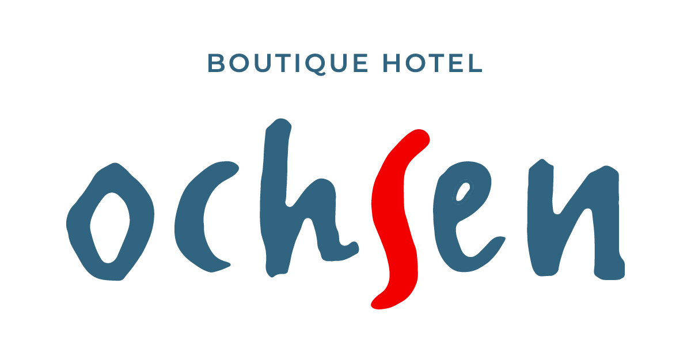

Grüsse ausBad Ragaz · Bartholoméplatz
Boutique Hotel Ochsen walkable
The cult-revival pick — full renovation, six room categories, an art gallery and a bar.[3]
~10-minute stroll from Memories, no taxi negotiation. P.S. self-check-in only — request a courtyard-facing room, bell tower nearby.
★ BAD RAGAZ ★
700 m
27.V.26
on foot